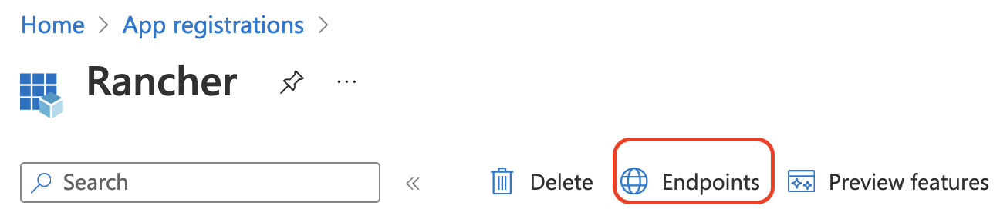

|
Este documento foi traduzido usando tecnologia de tradução automática de máquina. Sempre trabalhamos para apresentar traduções precisas, mas não oferecemos nenhuma garantia em relação à integridade, precisão ou confiabilidade do conteúdo traduzido. Em caso de qualquer discrepância, a versão original em inglês prevalecerá e constituirá o texto official. |
Configurar Azure AD
Microsoft Graph API
A Microsoft Graph API agora é o fluxo pelo qual você configurará o Azure AD. As seções abaixo ajudarão novos usuários a configurar o Azure AD com uma nova instância, assim como ajudarão os proprietários de apps Azure existentes a migrar para o novo fluxo.
O fluxo da Microsoft Graph API no Rancher está em constante evolução. Recomendamos que você use a versão corrigida mais recente de 2.7, pois ainda está em desenvolvimento ativo e continuará a receber novos recursos e melhorias.
Configuração de Novo Usuário
Se você tiver uma instância do Active Directory (AD) hospedada no Azure, pode configurar o Rancher para permitir que seus usuários façam login usando suas contas do AD. A configuração da autenticação externa do Azure AD requer que você faça configurações tanto no Azure quanto no Rancher.
|
Notes
|
Esboço da Configuração do Azure Active Directory
Configurar o Rancher para permitir que seus usuários se autentiquem com suas contas do Azure AD envolve múltiplos procedimentos. Revise o esboço abaixo antes de começar.
|
Antes de começar, abra duas abas do navegador: uma para o Rancher e uma para o portal do Azure. Isso ajudará na cópia e colagem dos valores de configuração do portal para o Rancher. |
1. Registrar o Rancher com o Azure
Antes de habilitar o Azure AD dentro do Rancher, você deve registrar o Rancher com o Azure.
-
Faça login no Microsoft Azure como um usuário administrativo. A configuração nas etapas futuras requer direitos de acesso administrativos.
-
Use a busca para abrir Registros de aplicativos.
-
Clique em Novo registro e preencha o formulário.

-
Digite um Nome (algo como
Rancher). -
De Tipos de contas suportadas, selecione "Contas apenas neste diretório (apenas AzureADTest - inquilino único)" Isso corresponde às opções de registro de app legadas.
No portal do Azure atualizado, URIs de redirecionamento são sinônimos de URLs de resposta. Para usar o Azure AD com o Rancher, você deve incluir o Rancher na lista branca do Azure (anteriormente feito através de URLs de resposta). Portanto, você deve garantir que preencha o URI de redirecionamento com a URL do seu servidor Rancher, incluindo o caminho de verificação conforme listado abaixo.
-
Na seção URI de redirecionamento, certifique-se de que Web esteja selecionado no menu suspenso e insira a URL do seu Servidor Rancher na caixa de texto ao lado do menu suspenso. Esta URL do servidor Rancher deve ser complementada com o caminho de verificação:
<MY_RANCHER_URL>/verify-auth-azure.Você pode encontrar seu URI de redirecionamento personalizado do Azure (URL de resposta) no Rancher na página de Autenticação do Azure AD (Visão Global > Autenticação > Web).
-
Clique em Registrar.
-
|
Pode levar até cinco minutos para que essa alteração tenha efeito, então não se preocupe se você não conseguir autenticar imediatamente após a configuração do Azure AD. |
2. Crie um novo segredo de cliente.
No portal do Azure, crie um segredo de cliente. O Rancher usará esta chave para autenticar com o Azure AD.
-
Use a busca para abrir Registros de aplicativos. Em seguida, abra a entrada para o Rancher que você criou no último procedimento.

-
No painel de navegação, clique em Certificados e segredos.
-
Clique em Novo segredo do cliente.

-
Digite uma Descrição (algo como
Rancher). -
Selecione a duração nas opções abaixo de Expira. Este menu suspenso define a data de expiração da chave. Durações mais curtas são mais seguras, mas exigem que você crie uma nova chave com mais frequência. Observe que os usuários não poderão fazer login no Rancher se detectar que o segredo do aplicativo expirou. Para evitar esse problema, altere o segredo no Azure e atualize-o no Rancher antes que expire.
-
Clique em Adicionar (você não precisa inserir um valor—ele será preenchido automaticamente após você salvar).
-
Você irá inserir esta chave na interface do Rancher mais tarde como seu Segredo do Aplicativo. Como você não poderá acessar o valor da chave novamente na interface do Azure, mantenha esta janela aberta durante o restante do processo de configuração.
3. Defina Permissões Necessárias para o Rancher
Em seguida, defina permissões de API para o Rancher dentro do Azure.
|
Certifique-se de definir permissões de aplicativo, e não permissões delegadas. Caso contrário, você não poderá fazer login no Azure AD. |
-
No painel de navegação, selecione Permissões de API.
-
Clique em Adicionar uma permissão.
-
Na API Microsoft Graph, selecione as seguintes Permissões de aplicativo:
Directory.Read.All
-
Volte para Permissões de API na barra de navegação. A partir daí, clique em Conceder consentimento de administrador. Em seguida, clique em Sim. As permissões do aplicativo devem ser semelhantes ao seguinte:

|
O Rancher não valida as permissões que você concede ao aplicativo no Azure. Você está livre para tentar qualquer permissão que desejar, desde que elas permitam que o Rancher funcione com usuários e grupos do AD. Especificamente, o Rancher precisa de permissões que permitam as seguintes ações:
O Rancher realiza essas ações para fazer login de um usuário ou para executar uma busca de usuário/grupo. Tenha em mente que as permissões devem ser do tipo Aqui estão alguns exemplos de combinações de permissões que atendem às necessidades do Rancher:
|
4. Permitir Fluxos de Cliente Público
Para fazer login pelo Rancher CLI, você deve permitir fluxos de cliente público:
-
No menu de navegação à esquerda, selecione Autenticação.
-
Em Configurações Avançadas, selecione Sim no botão ao lado de Permitir fluxos de cliente público.

5. Copiar Dados do Aplicativo Azure

-
Obtenha seu ID do inquilino do Rancher.
-
Use a busca para abrir Registros de aplicativos.
-
Encontre a entrada que você criou para o Rancher.
-
Copie o ID do diretório e cole-o no Rancher como seu ID do inquilino.
-
-
Obtenha seu ID do aplicativo (cliente) do Rancher.
-
Se você ainda não estiver lá, use a busca para abrir Registros de aplicativos.
-
Em Visão geral, encontre a entrada que você criou para o Rancher.
-
Copie o ID do aplicativo (cliente) e cole-o no Rancher como seu ID do aplicativo.
-
-
Na maioria dos casos, suas opções de endpoint serão Padrão ou China. Para qualquer uma dessas opções, você só precisa inserir o ID do inquilino, ID do aplicativo e Segredo do aplicativo.

Para endpoints personalizados:
|
Endpoints personalizados não são testados ou totalmente suportados pelo Rancher. |
Você também precisará inserir manualmente os endpoints de Gráfico, Token e Autenticação.
-
De Registros de aplicativos, clique em Endpoints:

-
Os seguintes endpoints serão os valores de endpoint do seu Rancher. Certifique-se de usar a versão v1 desses endpoints:
-
endpoint da API Microsoft Graph (Endpoint do Gráfico)
-
Endpoint de token OAuth 2.0 (v1) (Endpoint de Token)
-
Endpoint de autorização OAuth 2.0 (v1) (Endpoint de Autorização)
-
6. Configure o Azure AD no Rancher
Para completar a configuração, insira as informações sobre sua instância do AD na interface do Rancher.
-
Faça login no Rancher.
-
No canto superior esquerdo, clique em ☰ > Usuários e Autenticação.
-
No menu de navegação à esquerda, clique em Provedor de Autenticação.
-
Clique em AzureAD.
-
Preencha o formulário Configurar Conta Azure AD usando as informações que você copiou ao completar Copiar Dados do Aplicativo Azure.
A conta do Azure AD receberá privilégios de administrador, uma vez que seus detalhes serão mapeados para a conta principal local do Rancher. Certifique-se de que esse nível de privilégio é apropriado antes de continuar.
Para Endpoints Padrão ou da China:
A tabela a seguir mapeia os valores que você copiou no portal do Azure para os campos no Rancher:
Campo do Rancher Valor do Azure ID do Locatário
ID do Diretório
ID de aplicativo
ID de aplicativo
Segredo do Aplicativo
Valor de Chave
Segurança
https://login.microsoftonline.com/
Para Endpoints personalizados:
A tabela a seguir mapeia seus valores de configuração personalizados para os campos do Rancher:
Campo do Rancher Valor do Azure Endpoint do Graph
Microsoft Graph API Endpoint
Endpoint de Token
Endpoint de Token OAuth 2.0
Endpoint de Autenticação
Endpoint de Autorização OAuth 2.0
IMPORTANTE: Ao inserir o Endpoint do Graph em uma configuração personalizada, remova o ID do locatário da URL:
https://graph.microsoft.com/abb5adde-bee8-4821-8b03-e63efdc7701c -
(Opcional) No Rancher v2.9.0 e versões posteriores, você pode filtrar as associações de grupos de usuários no Azure AD para reduzir a quantidade de dados de log gerados. Veja os passos 4—5 de Filtrando Usuários por Associação a Grupos de Autenticação do Azure AD para instruções completas.
-
Clique em Habilitar.
Resultado: A autenticação do Azure Active Directory está configurada.
(Opcional) Configure a Autenticação com Múltiplos Domínios do Rancher
Se você tiver múltiplos domínios do Rancher, não é possível configurar múltiplas URIs de redirecionamento através da interface do Rancher. O arquivo de configuração do Azure AD, azuread, permite apenas uma URI de redirecionamento por padrão. Você deve editar manualmente azuread para definir a URI de redirecionamento conforme necessário para quaisquer outros domínios. Se você não editar manualmente azuread, então, após uma tentativa de login bem-sucedida em qualquer domínio, o Rancher redireciona automaticamente o usuário para o valor de URI de Redirecionamento que você definiu ao registrar o aplicativo em Passo 1. Registre o Rancher com o Azure.
Migrando do Azure AD Graph API para o Microsoft Graph API
Como o Azure AD Graph API está obsoleto e programado para ser descontinuado em junho de 2023, os administradores devem atualizar seu aplicativo Azure AD para usar o Microsoft Graph API no Rancher. Isso precisa ser feito com bastante antecedência em relação à descontinuação do endpoint. Se o Rancher ainda estiver configurado para usar o Azure AD Graph API quando ele for descontinuado, os usuários podem não conseguir fazer login no Rancher usando o Azure AD.
Atualizando Endpoints na Interface do Rancher
|
Os administradores devem criar um backup do Rancher antes de se comprometerem com a migração do endpoint descrita abaixo. |
-
Atualizar as permissões do registro do seu aplicativo Azure AD. Isso é crítico.
-
Faça login no Rancher.
-
Na página inicial da interface do Rancher, observe o banner na parte superior da tela que aconselha os usuários a atualizarem sua autenticação do Azure AD. Clique no link fornecido para fazê-lo.

-
Para completar a migração para a nova API do Microsoft Graph, clique em Atualizar Endpoint.
Certifique-se de que seu aplicativo Azure tenha um novo conjunto de permissões antes de iniciar a atualização. 
-
Quando você receber a mensagem de aviso em pop-up, clique em Atualizar.

-
Consulte as tabelas abaixo para a lista completa de alterações de endpoint que o Rancher realiza. Os administradores não precisam fazer isso manualmente.
Ambientes air-gapped
Em ambientes air-gapped, os administradores devem garantir que seus endpoints estejam na lista de permissões (veja a nota em Passo 3.2 de Registrar o Rancher com o Azure) uma vez que a URL do Endpoint do Graph está mudando.
Revertendo a Migração
Se você precisar reverter sua migração, observe o seguinte:
-
Os administradores são incentivados a usar o processo de restauração adequado se desejarem voltar. Consulte documentos de backup, documentos de restauração e exemplos para referência.
-
Os proprietários de aplicativos Azure que desejam girar o Segredo da Aplicação também precisarão girá-lo no Rancher, pois o Rancher não atualiza automaticamente o Segredo da Aplicação quando ele é alterado no Azure. No Rancher, observe que ele é armazenado em um segredo do Kubernetes chamado
azureadconfig-applicationsecret, que está no namespacecattle-global-data.
|
Se você atualizar para o Rancher v2.7.0+ com uma configuração existente do Azure AD e optar por desativar o provedor de autenticação, não poderá restaurar a configuração anterior. Você também não poderá configurar o Azure AD usando o fluxo antigo. Você precisará se registrar novamente com o novo fluxo de autenticação. Como o Rancher agora usa a API Graph, os usuários precisam configurar as permissões adequadas no portal do Azure. |
Global:
| Campo do Rancher | Endpoints Obsoletos |
|---|---|
Endpoint de Autenticação |
https://login.microsoftonline.com/{tenantID}/oauth2/authorize |
Segurança |
https://login.microsoftonline.com/ |
Endpoint do Graph |
https://graph.windows.net/ |
Endpoint de Token |
https://login.microsoftonline.com/{tenantID}/oauth2/token |
| Campo do Rancher | Novos Endpoints |
|---|---|
Endpoint de Autenticação |
https://login.microsoftonline.com/{tenantID}/oauth2/v2.0/authorize |
Segurança |
https://login.microsoftonline.com/ |
Endpoint do Graph |
https://graph.microsoft.com |
Endpoint de Token |
https://login.microsoftonline.com/{tenantID}/oauth2/v2.0/token |
China:
| Campo do Rancher | Endpoints Obsoletos |
|---|---|
Endpoint de Autenticação |
https://login.chinacloudapi.cn/{tenantID}/oauth2/authorize |
Segurança |
https://login.chinacloudapi.cn/ |
Endpoint do Graph |
https://graph.chinacloudapi.cn/ |
Endpoint de Token |
https://login.chinacloudapi.cn/{tenantID}/oauth2/token |
| Campo do Rancher | Novos Endpoints |
|---|---|
Endpoint de Autenticação |
https://login.partner.microsoftonline.cn/{tenantID}/oauth2/v2.0/authorize |
Segurança |
https://login.partner.microsoftonline.cn/ |
Endpoint do Graph |
https://microsoftgraph.chinacloudapi.cn |
Endpoint de Token |
https://login.partner.microsoftonline.cn/{tenantID}/oauth2/v2.0/token |
Filtrando Usuários por Associação a Grupos de Autenticação do Azure AD
No Rancher v2.9.0 e versões posteriores, você pode filtrar as associações de grupos dos usuários do Azure AD para reduzir a quantidade de dados de log gerados. Se você não filtrou as associações de grupos durante a configuração inicial, ainda pode adicionar filtros em uma configuração existente do Azure AD.
|
Filtrar a associação a um grupo de usuários afeta mais do que apenas os logs. Como o filtro impede que o Rancher veja que o usuário pertence a um grupo excluído, ele também não vê nenhuma permissão desse grupo. Isso significa que excluir um grupo do filtro pode ter o efeito colateral de negar aos usuários permissões que eles deveriam ter. |
-
No Rancher, no canto superior esquerdo, clique em ☰ > Usuários e Autenticação.
-
No menu de navegação à esquerda, clique em Provedor de Autenticação.
-
Clique em AzureAD.
-
Marque a caixa ao lado de Limitar usuários por associação a grupos.
-
Digite uma cláusula de filtro OData no campo Filtro de Associação a Grupos. Por exemplo, se você quiser limitar o registro a associações de grupos cujo nome comece com
test, marque a caixa e digitestartswith(displayName,'test').

API Graph do Azure AD Obsoleta
|
Reivindicações de Funções do Azure AD
O Rancher suporta a reivindicação de Funções fornecida pelo token do provedor OIDC do Azure AD, permitindo a delegação completa do Controle de Acesso Baseado em Funções (RBAC) para o Azure AD. Anteriormente, o Rancher processava apenas a reivindicação Groups para determinar a group associação de um usuário. Essa melhoria estende a lógica para incluir também a reivindicação de Funções dentro do token OIDC do usuário.
Ao incluir a reivindicação de Funções, os administradores podem:
-
Definir funções específicas de alto nível no Azure AD.
-
Vincular essas Funções do Azure AD diretamente a ProjectRoles ou ClusterRoles dentro do Rancher.
-
Centralizar e delegar completamente as decisões de controle de acesso ao provedor OIDC externo.
Por exemplo, considere a seguinte estrutura de funções no Azure AD:
| Nome da Função do Azure AD | da equipe |
|---|---|
project-alpha-dev |
Usuário A, Usuário C |
O Usuário A faz login no Rancher via Azure AD. O token OIDC inclui uma reivindicação de Funções, [project-alpha-dev]. A lógica do Rancher processa o token e a lista interna de groups/funções para o Usuário A, que inclui project-alpha-dev. Um administrador criou um Vínculo de Função de Projeto que mapeia a Função do Azure AD project-alpha-dev para a Função de Projeto Dev Member para o Projeto Alpha. O Usuário A recebe automaticamente a função Dev Member no Projeto Alpha.